컴퓨터응용가공산업기사 (2013-03-10 기출문제)
1과목: 기계가공법 및 안전관리
1. 연삭숫돌의 자생작용이 잘되지 않아 입자가 납작해져서 날이 둔화되는 무딤 현상은?
- 글레이징(glazing)
- 로딩(loading)
- 드레싱(dressing)
- 트루잉(truing)
(정답률: 71%)

2. 다음 중 기어를 절삭하는 공작기계는?
- 호빙머신
- CNC 선반
- 지그 그라인딩 머신
- 래핑 머신
(정답률: 85%)
3. 3침법이란 수나사의 무엇을 측정하는 방법인가?
- 골지름
- 피치
- 유효지름
- 바깥지름
(정답률: 78%)
4. 나사의 피치나 나사산의 반각과 유효지름 등을 광학적으로 쉽게 측정할 수 있는 것은?
- 공구현미경
- 오토콜리메이터
- 촉침식 측정기
- 옵티컬 플랫
(정답률: 50%)
5. 전기도금과 반대 현상을 이용한 가공으로 알루미늄 소재등 거울과 같이 광택 있는 가공 면을 비교적 쉽게 가공할 수 있는 것은?
- 방전가공
- 전해연마
- 액체호닝
- 레이저가공
(정답률: 73%)
6. 니이컬럼형 밀링머신에서 테이블의 상하 이동거리가 400mm이고, 새들의 이동거리는 200mm라면 호칭번호는 몇 번에 해당하는가?
- 1번
- 2번
- 3번
- 4번
(정답률: 47%)
7. 투영기에 의해 측정을 할 수 있는 것은?
- 진원도 측정
- 진직도 측정
- 각도 측정
- 원주 흔들림 측정
(정답률: 57%)
8. 다음 센터리스 연삭기의 장ㆍ단점에 대한 설명 중 틀린 것은?
- 센터가 필요하지 않아 센터 구멍을 가공할 필요가 없고, 속이 빈 가공물을 연삭할 때 편리하다.
- 긴 홈이 있는 가공물이나 대형 또는 중량물의 연삭이 가능하다
- 연삭숫돌 폭보다 넓은 가공물을 플랜지 컷 방식으로 연삭 할 수 있다.
- 연삭숫돌의 폭이 크므로, 연삭숫돌 지름의 마멸이 적고 수명이 길다.
(정답률: 73%)
9. 초경합금 공구에 내마모성과 내열성을 향상시키기 위하여 피복하는 재질이 아닌 것은?
- TiC
- TiAl
- TiN
- TiCN
(정답률: 74%)
10. 다음중 선반의 규격을 가장 잘 나타낸 것은?
- 선반의 총 중량과 원동기의 마력
- 깍을 수 있는 일감의 최대지름
- 선반의 높이와 베드의 길이
- 주축대의 구조와 베드의 길이
(정답률: 60%)
11. 주축이 수평이며, 컬럼, 니이, 테이블 및 오버 암 등으로 되어 있고 새들 위에 선회대가 있어 테이블을 수평면 내에서 임의의 각도로 회전할 수 있는 밀링머신은?
- 모방밀링머신
- 만능밀링머신
- 나사밀링머신
- 수직밀링머신
(정답률: 77%)
12. 선반 작업에서 공구 절인의 선단에서 바이트 밑면에 평행한 수평면과 경사면이 형성되는 각도는?
- 여유각
- 측면 절인각
- 측면 여유각
- 경사각
(정답률: 76%)
13. 구성인선(built up edge) 방지대책으로 잘못된 것은?
- 이송량을 감소시키고 절삭깊이를 깊게 한다.
- 공구경사각을 크게 주고 고속절삭을 실시한다.
- 세라믹공구(ceramic tool)를 사용하는 것이 좋다.
- 공구면의 마찰계수를 감소시켜 칩의 흐름을 원활하게 한다.
(정답률: 77%)
14. 수퍼 피니싱(super finishing)의 특징과 거리가 먼 것은?
- 진폭이 수 mm이고 진동수가 매분 수백에서 수천의 값을 가진다.
- 가공열의 발생이 적고 가공 변질층도 작으므로 가공면이 우수하다.
- 다듬질 표면은 마찰계수가 적고, 내마멸성, 내식성이 우수하다.
- 입도가 비교적 크고, 경한 숫돌에 고압으로 가압하여 연마하는 방법이다.
(정답률: 67%)
15. 광물성유를 화학적으로 처리하여 원액에 80%정도의 물을 혼합하여 사용하며, 정성이 낮고 비열과 냉각효과 큰 절삭유는?
- 지방질 유
- 광유
- 유화유
- 수용성 절삭유
(정답률: 72%)
16. 드릴 작업에서 너트나 볼트 머리에 접하는 면을 편평하게 하여 그 자리를 만드는 작업은?
- 카운터 싱킹
- 스폿 페이싱
- 태핑
- 리밍
(정답률: 68%)
17. 밀링 작업에서 스핀들의 앞면에 있는 24 구멍의 직접 분할핀을 사용하여 분할하며 이 때 웜을 아래로 내려 스핀들의 웜 휠과 물림을 끊는 분할법은?
- 간접 분할법
- 직접 분할법
- 차등 분할법
- 단식 분할법
(정답률: 74%)
18. +4㎛의 오차가 있는 호칭치수 30mm의 게이지 블록과 다이얼게이지를 사용하여 비교 측정한 결과 30.274mm를 얻었다면 실제치수는?
- 30.278mm
- 30.270mm
- 30.266mm
- 30.282mm
(정답률: 54%)
19. 작업장에서 무거운 짐을 들고 운반 작업을 할 때의 설명으로 부적합한 것은?
- 짐은 가급적 몸 가까이 가져온다.
- 가능한 상체를 곧게 세우고 등을 반듯이 하여 들어올린다.
- 짐을 들어 올릴 때 충격이 없어야 한다.
- 짐은 무릎을 굽힌 자세에서 들고 편 자세에서 내려 놓는다.
(정답률: 81%)
20. 다음 수거가공 시 작업안전 수칙에 맞는 것은?
- 드라이버의 날 끝은 뾰족한 것이어야 하며, 이가 빠지거나 동그랗게 된 것은 사용 않는다.
- 정을 잡은 손은 힘을 주고 처음에는 가볍게 때리고 점차 힘을 가하도록 한다.
- 스패너는 가급적 손잡이가 짧은 것을 사용하는 것이 좋으며, 스패너의 자루에 파이프 등을 연결하여 사용하는 것이 좋다.
- 톱날은 틀에 끼워 두세 번 사용한 후 다시 조정을 하고 절단한다.
(정답률: 52%)
2과목: 기계설계 및 기계재료
21. 담금질 조직 중에 냉각속도가 가장 빠를 때 나타나는 조직은?
- 솔바이트
- 마텐자이트
- 오스테나이트
- 트루스타이트
(정답률: 75%)
22. 알루미늄(Al)합금의 특징을 잘못 설명한 것은?
- 가볍고 전연성이 좋아 성형가공이 용이하다.
- 우수한 전기 및 열의 양도체이다.
- 용융점이 1083℃로 고온가공성이 높다.
- 대기 중에서는 일반적으로 내식성이 양호하다.
(정답률: 76%)
23. 연성이 큰 것으로부터 순서대로 되어 있는 것은?
- Al → Cu → Ag → Zn → Ni
- Fe → Pb → Cu → Ag → Pt
- Au → Cu → Pb → Zn → Fe
- Al → Fe → Ni → Cu → Zn
(정답률: 62%)
24. 탄소 공구강 및 일반 공구재료의 구비 조건으로 틀린 것은?
- 내마모성이 클 것
- 강인성 및 내충격성이 우수할 것
- 가공이 어려울 것
- 가격이 저렴할 것
(정답률: 83%)
25. 주철의 마우러 조직도를 바르게 설명한 것은?
- Si와 Mn량에 따른 주철의 조직 관계를 표시한 것이다.
- C와 Si량에 따른 주철의 조직 관계를 표시한 것이다.
- 탄소와 흑연량에 따른 주철의 조직 관계를 표시한 것이다.
- 탄소와 Fe3C량에 따른 주철의 조직 관계를 표시한 것이다.
(정답률: 72%)
26. 냉간 가공한 재료를 풀림 처리 시 나타나는 현상으로 틀린것은?
- 회복
- 재결정
- 결정립 성장
- 응고
(정답률: 61%)
27. 형상기억합금의 내용과 관계가 먼 것은?
- 형상기억 효과를 나타내는 합금은 오스테나이트 변태를 한다.
- 어떠한 모양을 기억할 수 있는 합금이다.
- 소성변형된 것이 특정 온도 이상으로 가열하면 변형되기 이전의 원래 상태로 돌아가는 합금이다.
- 형상기억합금의 대표적인 합금은 Ni-Ti합금이다.
(정답률: 64%)
28. 공작기계 및 자동차 등에 사용되는 소결 마찰 부품의 구비 조건으로 맞지 않는 것은?
- 내마모성, 내열성이 낮을 것
- 마찰계수가 크고 안정될 것
- 가격이 저렴할 것
- 열전도성, 내유성이 좋을 것
(정답률: 63%)
29. 다음 중 두랄루민 합금과 관계없는 것은?
- Al-Cu-Mg-Mn 계 합금이다.
- 시효경화 처리하면 인장강도가 연강과 같은 정도가 된다.
- 가볍고 강인하여 단조용으로 사용된다.
- Y-합금이라고도 한다.
(정답률: 78%)
30. 다음 중 절삭 공구용 특수강은?
- Ni Cr 강
- 불변강
- 내열강
- 고속도강
(정답률: 84%)
31. 다음중 나사의 효율에 관한 식으로 맞는 것은?
- 나사의 효율=마찰이 없는 경우 회전수/마찰이 있는 경우 회전수
- 나사의 효율=마찰이 있는 경우 회전력/마찰이 없는 경우 회전력
- 나사의효율=나사의 1피치/나사의 1리드
- 나사의효율=나사의 1리드/나사의 1피치
(정답률: 51%)
32. 전동축에 큰 휨(deglection)을 주어서 축의 방향을 자유롭게 바꾸거나 충격을 완화시키기 위해 사용하는 축은?
- 직 축
- 크랭크 축
- 플렉시블 축
- 중공 축
(정답률: 72%)
33. 드럼의 지름 500mm인 브레이크 드럼축에 98.1Nㆍm의 토크가 작용하고 있는 블록 브레이크에서 블록을 브레이크 바퀴에 밀어 붙이는 힘은 약 몇 kN 인가?(단, 접촉부 마찰계수 0.2)
- 0.54
- 0.98
- 1.51
- 1.96
(정답률: 29%)
34. 지름이 50 mm 이고 길이가 100 mm 인 저널 베어링에서 5.9 kN의 하중을 지탱하고 있을 때 저널면에 작용하는 압력은 약 몇 MPa 인가?
- 0.21
- 0.59
- 1.18
- 1.65
(정답률: 50%)
35. 다음 중 두 축의 상대위치가 평행할 때 사용되는 기어는?
- 베벨 기어
- 나사 기어
- 웜과 웜기어
- 래크와 피니언
(정답률: 62%)
36. 하중이 4 kN 작용하였을 때 처짐이 100 mm 발생하는 코일 스프링의 소선 기름은 20 mm 이다. 이 스프링의 유효 감김수는 약 몇 권인가? (단, 스프링 지수(C)는 10 이고, 스프링 선재의 전단탄성계수는 80 GPa 이다.)
- 8
- 4
- 5
- 6
(정답률: 35%)
37. 벨트 전동에서 긴장측의 장력 T１과 이완측의 장력 T2 사이의 관계식으로 옳은 것은?(단, 원심력은 무시하고 μ는 접촉부 마찰계수, θ는 벨트와 풀리의 접촉각 〔rad〕이다.)
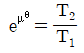
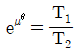
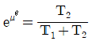
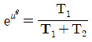
(정답률: 48%)
38. 다음 중 동력의 단위에 해당되지 않는 것은?
- erg/s
- Nㆍm
- PS
- J/s
(정답률: 53%)
39. 용접 이음의 장점에 해당하지 않는 것은?
- 열게 의한 잔류응력이 거의 발생하지 않는다.
- 공정수를 줄일 수 있고, 제작비가 싼 편이다.
- 기밀 및 수밀성이 양호하다.
- 작업의 자동화가 용이하다.
(정답률: 71%)
40. 평벨트 풀리의 지름이 600mm, 축의 지름이 50mm라 하고, 풀리를 폭(b) x 높이(h) = 8mm x 7mm의 묻힘키로 축에 고정하고 벨트 장력에 의해 풀리의 외주에 2kN의 힘이 작용한다면, 키의 길이는 몇 mm 이상이어야 하는가 ? (단, 키의 허용전단응력은 50MPa로 하고, 전단 응력만 고려하여 계산한다.)
- 50
- 60
- 70
- 80
(정답률: 44%)
3과목: 컴퓨터응용가공
41. 솔리드 모델을 구성할 때 기본 형상(primitives)들의 boolean operation을 이용하여 모델을 구성하는 방식에 해당하는 것은?
- B-rep model
- Voxel model
- Octree model
- CSG model
(정답률: 66%)
42. Bezier 곡선의 일반적인 특징으로 틀린 것은?
- 처음과 마지막 조정점(Control Point)을 지난다.
- 조정점들을 둘러싸는 볼록포(Convex Hull) 안에 곡선의 전체가 놓인다.
- 국부 변형(Local Control)이 불가능하다.
- 곡선의 차수와 조정점의 개수는 무관하다.
(정답률: 71%)
43. 2차원 데이터 변환 중 그림과 같이 원점을 기준으로 30° 회전시킨 후의 좌표값 계산식은?
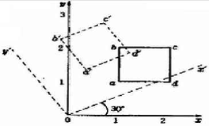
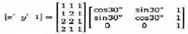
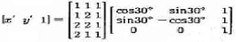
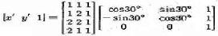
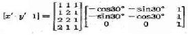
(정답률: 59%)
44. 곡면 모델링(surface modeling) 시스템에서의 곡면 입력방법이 아닌 것은?
- 곡면상의 점들을 입력하여 이 점들을 보간하여 곡면을 생성하는 방법
- 곡면상의 곡선들을 그물형태로 입력한 곡선망으로부터 보간 곡면을 생성하는 방법
- 곡선을 입력하고 이것을 직선이동이나 회전이동하도록 하여 곡면을 생성하는 방법
- 기본적인 입체를 저장하여 놓고 불리안 조작을 통해 필요한 형상을 생성하는 방법
(정답률: 58%)
45. 곡률(curvatiure)에 관한 일반적인 설명으로 틀린 것은?
- 곡률(curvature)의 역수를 곡률 반경(radius of curvature)이라 한다.
- 직선의 곡률반경은 무한대이다.
- 반지름이 a인 원호의 곡률반경은 a이다.
- 평면상에 놓인 곡선에 대한 법선 곡률(normal curvature)은 무한대이다.
(정답률: 59%)
46. 다음 특징형상 모델링에 대한 설명 중 틀린 것은?
- 설계자에 친숙한 형상단위로 물체를 모델링 할 수있다.
- 특징형상의 종류는 많이 사용되는 적용분야에 따라 결정되며, 우리나라의 경우 KS규격에서 여러 적용 분야에 대해 필요한 모든 특징형상을 정의하고 있다.
- 대부분의 시스템이 제공하는 전형적인 특징형상으로는 모떼기(chamfer), 구멍(hole), 슬롯(slot), 포켓(pocket) 등이 있다.
- 특징형상을 정의할 때 그 크기를 결정하는 파라미터들도 같이 정의하며, 이들을 변경하여 모델의 크기를 바꾸는 것은 파라메트릭 모델링의 한 형태로 볼 수 있다
(정답률: 55%)
47. CAM에서 포스트 프로세서(Post processor)에 대한 설명으로 가장 적당한 것은?
- 여러 대의 컴퓨터와 터미널을 상호 연결하기 위해 접속하는 데이터 통신망용 프로그램
- CAM 시스템으로 만들어진 공구 위치 정보를 바탕으로 CNC 공작기계의 제어코드를 산출하는 프로그램
- 설계해석용의 각종 정보를 추출하거나 필요한 형식으로 재구성하는 프로그램
- 주변장치의 제어를 위해 전기적, 논리적으로 중앙처리 장치와 연결하는 프로그램
(정답률: 72%)
48. 셀(cell) 또는 프리미티브(primitive)라고 불리는 구, 원추, 원통 등의 입체요소들을 결합하여 모델을 구성하는 방식은?
- 와이어 프레임 모델링
- 솔리드 모델링
- 서피스 모델링
- 시스템 모델링
(정답률: 74%)
49. 다음 모델링(Modeling)에 대한 설명 중 틀린 것은?
- 솔리드 모델링은 3차원의 형상정보를 완비한 표현방식이다.
- 솔리드 모델에는 CSG(Constructive Solid Geometry) 방식과 B-rap(Boundary Representation)방식 등이 있다.
- CSG 방식은 형상을 구성하는 기하 요소와 위상 요소의 상관관계를 정의하는 방식이다.
- CSG 표현은 항상 대응하는 B-rep 모델로 치환이 가능하다.
(정답률: 50%)
50. NC 데이터를 생성하기 전에 생성된 CL 데이터를 이용하여 공구의 위치, 과절삭, 미절삭 등을 확인하는 과정을 무엇이라 하는가?
- 모델링
- 공구경로 검증
- 포스트 프로세싱
- 가공조건 정의
(정답률: 73%)
51. 다음 중 좌표계에 관한 설명으로 잘못된 것은?
- 실세계에서 모든 점들은 3차원 좌표계로 표현된다.
- x, y, z축의 방향에 따라 오른손좌표계와 왼손좌표계가 있다.
- 모델링에서는 직교좌표계가 사용되지만, 원통좌표계나 구면좌표계가 사용되기도 한다.
- 좌표계의 변환에는 행렬 계산의 편리성으로 동차좌표계(Homogeneous Coordinate)대신 직교좌표계가 주로 사용된다.
(정답률: 55%)
52. 다음 중 CNC 가공계획 단계에서 결정하는 것이 아닌 것은?
- 소재 고정방법
- CNC 공작기계 선정
- 공정순서
- 부품도면 선정
(정답률: 55%)
53. CAD 시스템의 입력 장치가 아닌 것은?
- 트랙볼(Track Ball)
- 스캐너(Scanner)
- 태블릿(Tablet)
- 래스터(Raster)
(정답률: 54%)
54. Surface Modeling의 특징 중 잘못 설명된 것은?
- 은선 제거가 가능하다.
- NC data를 생성할 수 있다.
- 유한요소법의 적용을 위한 요소분할이 쉽다.
- 솔리드와 같이 명암 알고리즘을 제공할 수가 있다.
(정답률: 58%)
55. 3차곡선식P(u)=a0+a1U+a2U2+a3U3로주어질때 a0, a1, a2, a3와 같은대수계수를곡선의 형상과 밀접한 관계를 갖는 P0, P1,
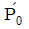
,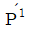
과 같은기하계수로바꾸어서 나타낸 것은- Hermite 곡선
- Conic 곡선
- Hyperbolic 곡선
- Polynomial 곡선
(정답률: 60%)
56. 다음 중 회사들 간에 컴퓨터를 이용한 데이터의 저장과 교환을 위한 산업 표준이 되고 있는 CALS에서 채택하고 있는 제품 데이터 교환 표준은?
- CAT
- STEP
- XML
- DXF
(정답률: 64%)
57. y=2x+1인 직선에 수직이고, 점(2,4)를 지나는 직선의 방정식에 대한 표준 음함수식을 구하면?
- 0.5083x + 0.9742y – 5.1862 = 0
- 0.4472x + 0.8945y – 4.4723 = 0
- -0.5111x + 1.0001y – 5.2145 = 0
- 0.4501x + 0.9241y – 4.5217 =0
(정답률: 50%)
58. 패턴의 반전 횟수를 기준으로 4가지 방식으로 구분되는 신속 툴링(Rapid tooling ; RT)에 대한 설명으로 옳은 것은?
- 1회 반전법-신속 시작 패턴들을 다른 재질의 주물로 직접 변환
- 2회 반전법-1회 반전 툴링을 사용하여 만든 금형 패턴을 주조 금형으로 변환
- 3회 반전법-코어와 캐비티판들을 실리콘 RTV(room temperature vulcanizing) 고무성형 공정을 통하여 딱딱한 플라스틱 패턴으로 변환
- 직접 툴링법-범용 공작기계에서 절삭공구를 이용하여 금형제작
(정답률: 34%)
59. 2차원 절삭가공에서 지름 20mm인 엔드밀 추천 절삭속도가 6280 mm/min 일 때 적정 공구 회전 속도는?
- 100 rpm
- 150 rpm
- 200 rpm
- 2000 rpm
(정답률: 50%)
60. 렌더링 기법 중 광선투사법(ray tracing)에 관한 내용으로 틀린 설명은?
- 광선이 광원으로부터 나와 물체에 반사되어 뷰잉 평면에 투시될 때까지의 궤적을 거꾸로 추적한다.
- 뷰잉 화면상의 화소(pixel)의 개수에 제한을 받지 않고 빛의 강도와 색깔을 결정할 수 있다.
- 뷰잉 화면상에서 거꾸로 추적한 광선이 광원까지 도달하였다면 광원과 화소 사이에는 반사체가 존재한다고 해석한다.
- 뷰잉 화면상에서 거꾸로 추적한 광선이 광원가지 도달하지않는다면 그반사면에서의 색깔을 화소에 부여한다.
(정답률: 47%)
4과목: 기계제도 및 CNC공작법
61. 다음 중 MMC(최대실체조건) 원리가 적용될 수 있는 기하 공차는?
- 진원도
- 위치도
- 원주 흔들림
- 원통도
(정답률: 41%)
62. 기계구조용 합금강 강재 중 크로뮴 몰리브데넘 강에 해당하는 것은?
- SMn
- SMnC
- SCr
- SCM
(정답률: 75%)
63. 도면에서 다음에 열거한 선이 같은 장소에 중복되었다. 어느 선에서 표시하여야 하는가? ( 치수 보조선, 절단선, 무게 중심선, 중심선 )
- 무게 중심선
- 중심선
- 치수 보조선
- 절단선
(정답률: 74%)
64. 제 3각법으로 투상되는 그림과 같은 투상도의 좌측면도 가장 적합한 것은?
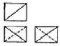
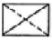
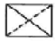
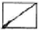
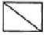
(정답률: 48%)
65. 어떤치수가 50
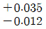
일 때 치수 공차는 얼마인가?- 0.023
- 0.035
- 0.047
- 0.012
(정답률: 80%)
66. 그림과 같은 입체도를 화살표 방향에서 본 투상도로 가장 적합한 것은?
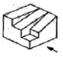
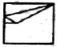
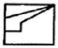
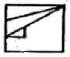
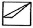
(정답률: 85%)
67. 그림과 같은 투상도는 제 3각법 정투상도이다. 우측면도로 가장 적합한 것은?
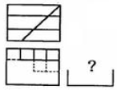
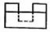
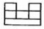
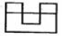
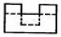
(정답률: 52%)
68. 다음 중 가공방법의 기호를 옳게 나타낸 것은?
- 브로칭 가공 – BR
- 스크레이핑 다듬질 – SB
- 래핑 다듬질 – BR
- 평면 연삭 가공 – GBS
(정답률: 70%)
69. 나사의 종류를 표시하는 다음 기호 중에서 미터 사다리꼴 나사를 표시하는 것은?
- R
- M
- Tr
- UNC
(정답률: 82%)
70. 스플릿 테이퍼 핀의 호칭 방법으로 옳게 나타낸 것은?
- 규격 명칭, 호칭지름x호칭길이 , 재료, 지정사항
- 규격 명칭, 등급, 호칭지름x호칭길이, 재료
- 규격 명칭, 재료, 호칭지름x호칭길이, 등급
- 규격 명칭, 재료, 호칭지름x호칭길이, 지정사항
(정답률: 41%)
71. CNC 의 절삭 제어 방식이 아닌 것은?
- 위치결정 제어
- 디지털 제어
- 직선절삭 제어
- 윤곽절삭
(정답률: 80%)
72. G_ X_ Y_ Z_ R_ O_ P_ F_ L_ :은 머시닝센터의 고정 사이클 지령방법이다. 이 블록에서 어드레스 P가 나타내는 것은?
- 1회 절입량
- 구멍바닥에서 잠시 정지시간
- 절삭 이송속도
- 고정사이클 반복횟수
(정답률: 71%)
73. 다음중 지령 블록에서만 유효한 (One Shot) G 코드는?
- G00
- G04
- G41
- G96
(정답률: 72%)
74. CNC 프로그램에서 사용되는 주요 주소(Address)와 그 기능이 잘못 연결된 것은?
- O : 프로그램 번호
- G : 준비 기능
- S : 주축 기능
- L : 공구 기능
(정답률: 83%)
75. CNC 기계의 움직임을 전기적인 신호로 표시하는 일종의 회전 피드백(feed back) 장치는?
- 볼 스크루
- 리졸버
- 서보기구
- 컨트롤러
(정답률: 75%)
76. CNC 방전 전극용 재료의 구비조건이 아닌 것은?
- 전기 저항값이 낮고 전기 전도도가 클 것
- 융점이 높아 방전시 소모가 적을 것
- 가격이 저렴할 것
- 성형이 용이하지 않을 것
(정답률: 69%)
77. CNC선반에서 지령값 X60.0으로 소재를 가공한 후 측정한 결과 직경이 59.94mm이었다. 기존의 X축 보정값이 0.0⑤mm라 하면 보정값을 얼마로 수정해야 하는가?
- 0.065
- 0.⑤5
- 0.06
- 0.01
(정답률: 63%)
78. 머시닝센터로 태핑 사이클 G84를 이용하여 피치가1.25mm인 나사를 가공하려고 한다. G99 G84 X20. Y20. Z-30. R5. F___ :로 가공할 때 주축 회전수가 200rpm이면 이송속도 F(mm/min)는 얼마로 하여야 하는가?
- 150
- 200
- 250
- 300
(정답률: 52%)
79. 선반 외경용 툴 홀더 규격에서 밑줄 친 25가 나타내는 의미는 무엇인가?
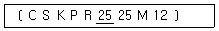
- 홀더의 높이
- 절삭날 길이
- 홀더의 길이
- 홀더의 폭
(정답률: 51%)
80. CNC공작기계에서 작업시 안전사항에 위배 되는 사항은?
- 작업 중 위급시는 비상정지 스위치를 누른다.
- CNC선반 작업시 절삭시간을 줄이기 위하여 작업문을 열어 놓고 가공한다.
- 가공된 칩 제기시는 기계를 반드시 정지하고 제거한다.
- CNC방전 가공시에는 감전에 유의한다.
(정답률: 88%)